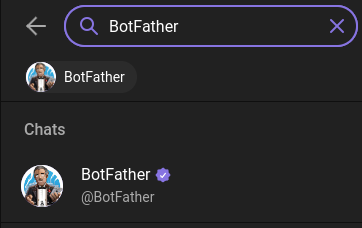
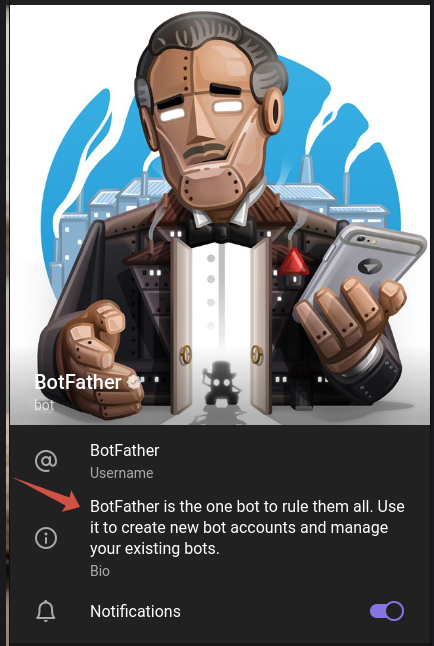
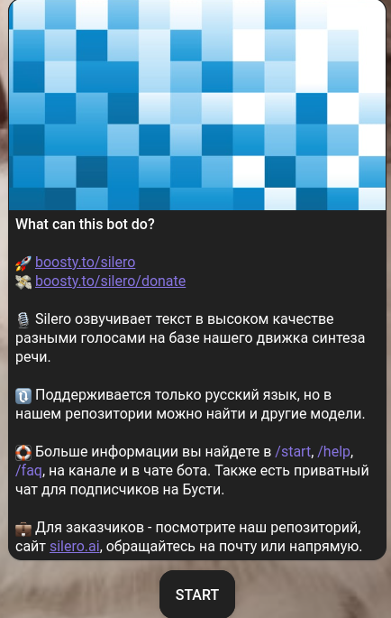

Документация по созданию Telegram бота
Добро пожаловать в документацию по созданию телеграм бота с использованием платформы BotFather. В этом руководстве мы предоставим вам пошаговую инструкцию по созданию, настройке и запуску вашего собственного бота в мессенджере Telegram с помощью BotFather. Приготовьтесь к тому, чтобы узнать основные шаги и принципы, необходимые для создания бота, который будет эффективно взаимодействовать с вашими пользователями в Telegram.
Поиск BotFather в Telegram:
- Откройте приложение Telegram на своем устройстве.
- В поисковой строке в верхней части экрана введите "BotFather".
- Найдите официального аккаунт BotFather в результатах поиска.
- Нажмите на аккаунт BotFather, чтобы перейти на его страницу.
-
Нажмите кнопку "Start" или введите команду "/start", чтобы начать взаимодействие с BotFather.
 -
Чтобы создать нового бота нажмите на пункт /newbot или впишите это в чат
- Впишите Имя для бота, его будут видеть все пользователи и нажмите Ввод
- Введите Username для бота. Оно обязательно должно заканчиваться на _bot, например username_bot, это важно!
Отлично, ваш бот создан, теперь чтобы отредактировать вашего бота впишите /mybots или выберите это в меню, оно находится в поле ввода, слева от кнопки смайликов
В списке выберите нужного бота и нажмите на кнопку с его названием
Я опишу несколько пунктов из меню которые понадобятся:
Api Token
- В этом пункте вы можете узнать API ключ вашего бота
Edit bot
- В этом пункте вы можете настроить бота, разберём все настройки.
1)Edit Name- Этот пункт отвечает за изменение имени бота, просто введите его новое имя, его видят все пользователи бота 2)Edit About- Этот пункт отвечает за изменение описания бота, введите текст который будет указан в описании бота, на примере BotFather он указан стрелкой

3)Edit Description- Этот пункт отвечает за изменение приветственного сообщения бота когда пользователь заходит в него первый раз. Пример:

4)Edit Description Picture- Этот пункт отвечает за изменение фото которое появляется вместе с приветственным сообщением, на примере выше оно находится над текстом. Есть определенные ограничения на разрешение картинки, о них вам сообщит бот, отправьте боту необходимое вам фото когда выберите этот пункт
5)Edit Botpic- Этот пункт отвечает за изменение аватарки бота, отправьте боту необходимое вам фото когда выберите этот пункт
6)Edit Commands- Этот пункт отвечает за команды бота, по типу/start, лучше этот пункт не редактировать, команды задаёт программист в программном коде бота